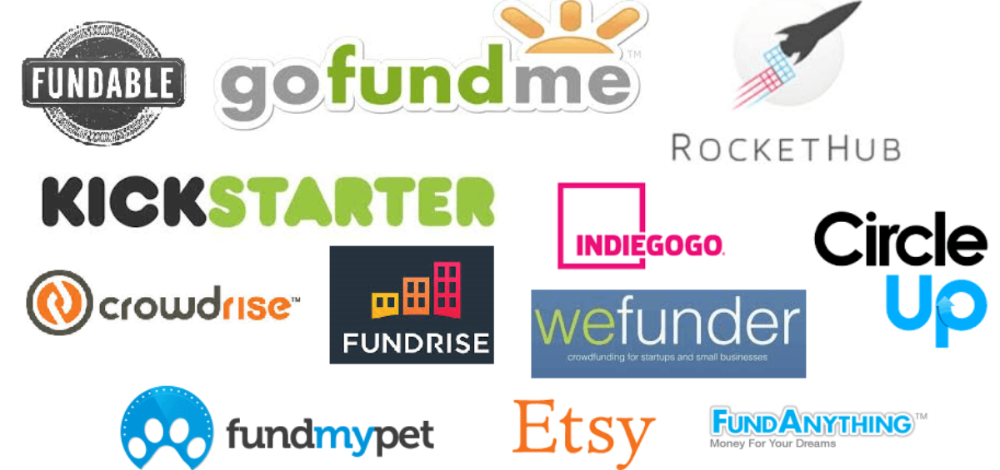
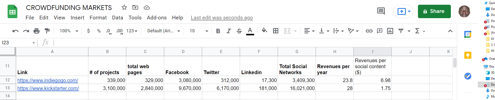
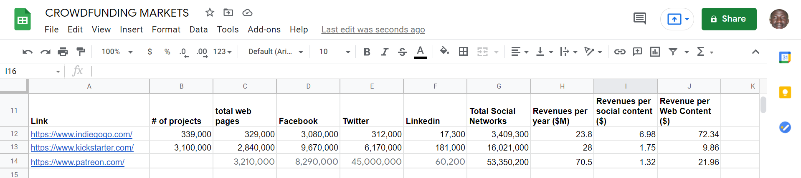
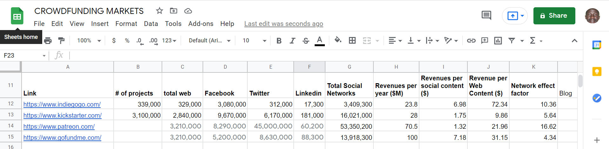
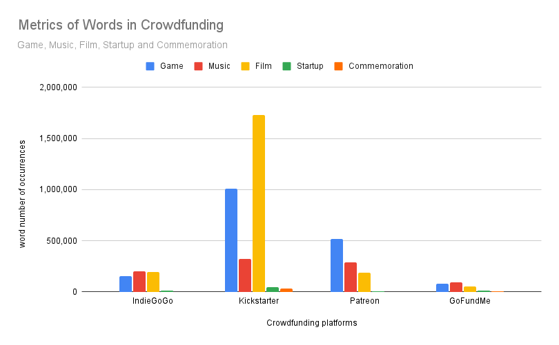
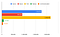
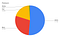
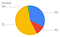

Metrics of Crowdfunding words and revenues


Crowdfunding has been there for now 25 years since a British rock band funded their reunion tour through online donations in 1997 and the birth of ArtistShare the first crowdfunding platform in 2000. I won’t promise you a book about the history of crowdfunding as I did for the history of blogging because I won’t be seen as one who doesn't keep promises but I will try hard in this article to highlights some of the metrics related to words of crowdfunding like what I have done for as I did for the words software, Marketing, Education, Climate Change, tech companies, and Writers.
Before I jump on to metrics related to words for crowdfunding platforms let’s look at the metrics of the four majors platforms with data that I have gathered using my own methodology then these data are again proxy metrics because the owners of these platforms could bring metrics different than that. Then these metrics I will be presenting to you are approximative which means they represent the real data with a level of errors that I could not estimate but I think that these errors are negligible. The 4 leading crowdfunding platforms are IndieGoGo, Kickstarter, Patreon, and GofundMe, and here are the metrics I have gathered about these crowdfunding platforms
Given these two rows of the data that I am collecting we could conclude that IndieGoGo contributors contribute more than contributors of Kickstarter and that IndieGoGo gets more revenue from the network effects of shared content on social media like Twitter, Facebook, and LinkedIn. Then going after the audience of IndieGoGo is way better than going after the audience of Kickstarter contributors for an entrepreneur whose business model targets contributors of crowdfunding platforms.

Tracking social sharing of tech companies whose revenue depend on the network effects like tech companies in the crowdfunding market can help you estimate their future revenue and by the same way use these metric as input of a company valuation models for our case it is about this attention valuation model that I was writing about in this article. I hope that you understand that the network effect is also about the level of attention something gets from us. Given the revenue per year of each of these crowdfunding platforms and the total social network exposure they have the simplest metric we could build is a revenue per social content and with this metric one could conclude the IndieGoGo get more revenue per social content what is another way of illustrating what I have highlighted in the first paragraph by saying that IndieGoGo’s contributors contribute on average more than Kickstarter’s contributor and we can add also that these IndieGoGo’s contributors contribute more than Patreon’s contributors because Kickstarter’s contributors contribute more than these Patreon’s contributors. Here are the data

then if we would rank each crowdfunding platform’s contributors by their level and power of contribution we would end up with this Ranking
- IndieGoGo
- Kickstarter
- Patreon
A business for investors, a political movement looking for funders, or a non-profit looking for backers should care about these metrics that I am providing to you as inputs of their investment research decision-making process and for defining their target audience.
If we take a platform like a crowdfunding platform as a tech company producing internet content and getting revenue from this content we could build another metric which is the revenue per web content that you see in the table above. Using this revenue per web content leads us to another ranking of these three crowdfunding platforms
- IndieGoGo
- Patreon
- Kickstarter
What’s happened for these two crowdfunding platforms to switch positions?
In order to answer this question, we will use another metric that I have introduced into the table. This metric will be an important metric for the study of the network effect and for attention valuation models that we will deal with together in my comings articles. I call this metric the network effect factor which is the number of social content a platform gets from on produced content. It is a multiplication of content due to social sharing. Here is the completed table with the value of this factor for each of these three crowdfunding platforms

apart from these two missing data points about the number of projects for Patreon and GofundMe, you could clearly see how each of these platforms is performing relative to web content and Social media content and I introduced a metric called Network effect factor which is a ratio between the size of the social media content and the sized of the content owned by the crowdfunding platform. This networks effect factor shows in what level and proportion people like you and me are sharing crowdfunding content on Social media like Twitter, Facebook, and Linkedin. Just after I computed some over the envelope estimation of revenues per channel by simply dividing the total revenue of each platform by the total social networks content and the platform proprietary content. With these metrics, you could see how IndieGoGo and Patreon are performing better than the two others in terms of revenue per social content and revenue per platform content.
Since we have dived into global metrics that I was able to expand with a lot more metrics let’s now work with words that can be relevant to you directly because this is a simple introductory article into which I could not go into more detailed analysis. If you want more granular data, I highly recommend you to wait for these tech-enabled platforms about words and metrics that I will be building and offering as SaaS.
The words I have chosen to study are Music, Film, Startup, Commemoration, and Game. As I have written game, I was willing to tell you that I will be publishing articles about the game industry and the work and tech-enabled game ideas I have in The Game Development Journal a medium publication ran by Nicoletta Tancred and MLee two great folks like those of Nerd for tech, Predict, Codex, DataDrivenInvestor, and Mlearning.ai all great medium’s publications hosting my articles. But this article is about metrics of words of crowdfunding then let’s see the data about the words we have chosen

Above are the metrics of each crowdfunding platform when it is about the words Game, Music, Film, Startup and Commemoration but if we add up these metrics in order to get global metrics here is the chart we end up getting

We could see with this chart that the most important words or crowdfunding projects if you want, are in order of level of occurrences
- Film
- Game
- Music
- Startup
- Commemoration
This ranking is not surprising to me but I thought before working with the data that the word Startup would get a more important position.
The first inside that we could get from these data is that in Patreon Gaming projects are more important than the other kinds of projects

while Kickstarter seems to be more about film crowdfunding than other crowdfunding project-related words

I could say a lot more about these few data points but let me let you consume them and see what other stories they tell you because we often associate narrative with numbers. What I am expecting and what I would love to see happen is that you get benefits from these articles about words and metrics that I am publishing. Maybe these pieces of data will help you for your next Game, Film, Music, or Commemoration crowdfunding projects. If you are a tech entrepreneur I have gathered with this data a tech-enabled business model that exploits the theory of the minimum viable audience by trying to target the smallest part audience of these crowdfunding platforms. You may guess what part I am talking about but if you read me in the future you will know it because I very likely write about this tech-enabled niche business model that could scale with an appropriate story that resonates with people. More article about Words and Metrics you can look at here.
Thank you for reading me. Your Guest and friend Papa Makthar DIOP